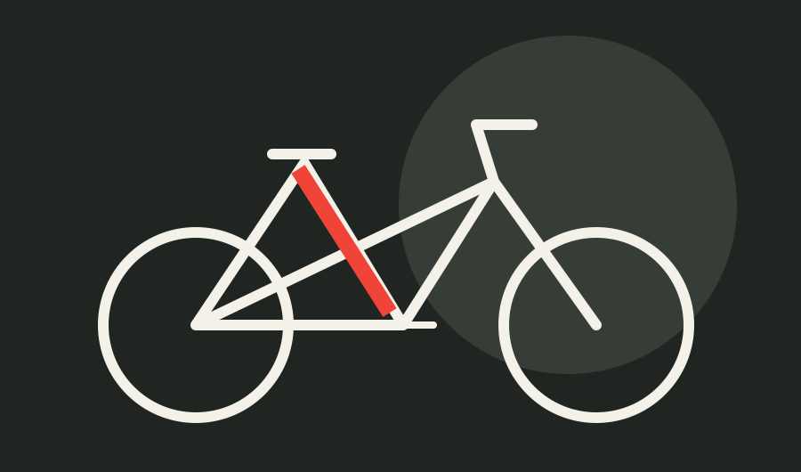
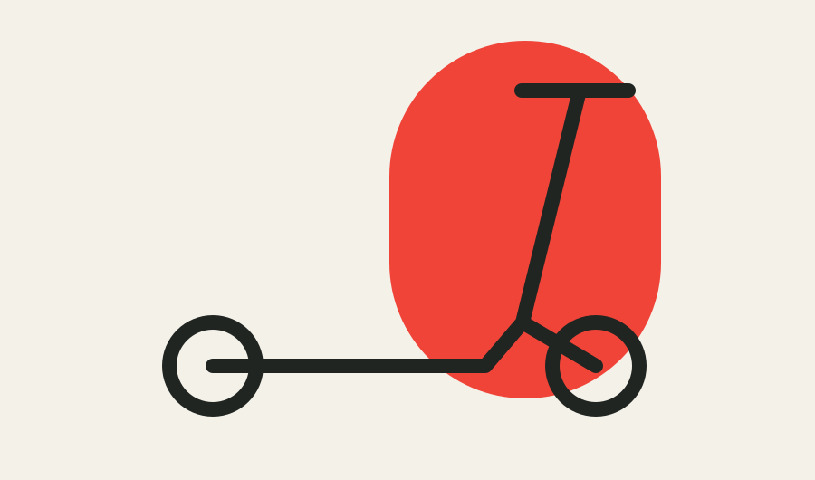
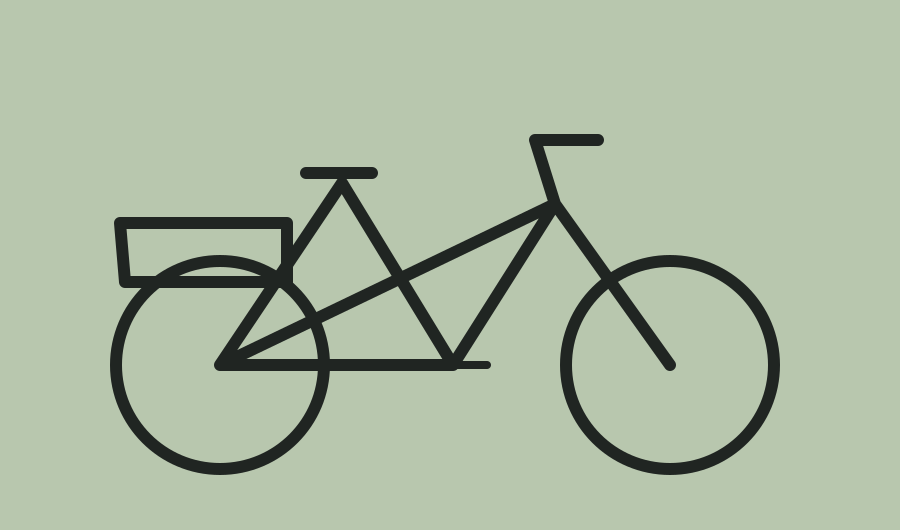
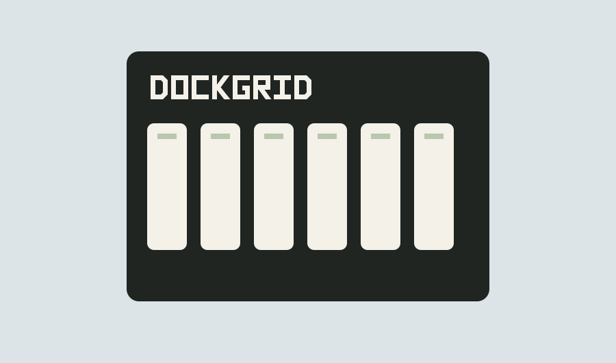
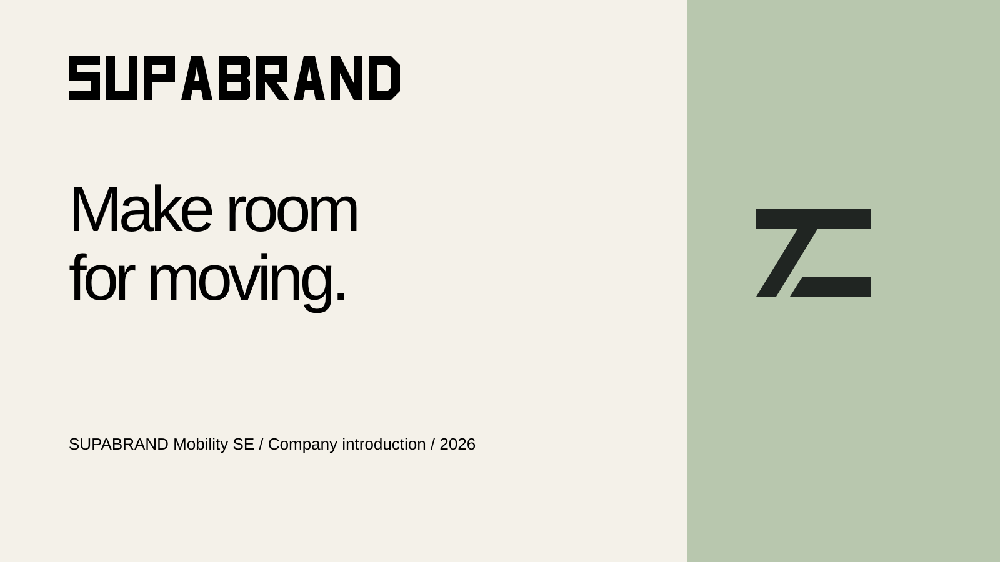

Masterbrand / City family
SUPABRAND City C1 DAILY
SUPABRAND City C2
DAILY is the entry-level line. City C2 is the core specification. Both belong directly to SUPABRAND.
DAILY is a line, not an additional subbrand.

Thoughtful mobility.
Made to fit real life.
Fahrräder im Kern. Neue Möglichkeiten drumherum. SUPABRAND gestaltet Mobilität für den Alltag — und für die Menschen, die ihn bewegen.
Die Haltung entdecken01 — Synthetic design studyFictional brand and product concepts. Agency presentation; illustrations are not engineering specifications.
01 / Our reason to exist
Give everyday movement more possibility, with less friction.
Eine Stadt ist keine Rennstrecke. Ein Weg muss nicht immer optimiert werden. Manchmal sind es zehn Minuten, die dir gehören. Eine Pause am Fluss. Ein Gespräch vor der Werkstatt. Der Heimweg, auf dem nichts mehr bewiesen werden muss.
Wir denken an das Leben um das Produkt herum. Wo es steht. Wer es wartet. Wer es morgen ausleiht. Gute Technik lässt Raum für Aufmerksamkeit.
Unser Markenwort: Spielraum.
Editorial philosophy, adapted from the January brand letter. “Spielraum” is a creative principle, not a product or performance claim.
Mit etwas anfangen, das für jemanden zählt.
Menschen, Ressourcen und Zusammenhänge mitdenken.
Aufmerksam bleiben. Das nützliche Detail sehen.
Es muss auch am Dienstag funktionieren.
SUPA is our 2025 culture mnemonic. The brand name was coined first; these principles are not an invented origin story.
02 / One parent. Distinct ways forward.
SUPABRAND Mobility SE is a fictional Vienna-headquartered manufacturer founded in 2016. Independent in spirit and precise in execution, it aims to be the name a mechanic recommends before the campaign reaches you. Hidden champion is an internal aspiration, not a market-ranking claim.
Masterbrand / City family
DAILY is the entry-level line. City C2 is the core specification. Both belong directly to SUPABRAND.
DAILY is a line, not an additional subbrand.

Allroad / A8
Premium, without the performance of prestige. A considered bicycle for the long way.

Glide / G1
A compact electric scooter. An accessible starting point for selected everyday journeys.

Cargo / F4
Professional cargo cycles. Built around the people who keep an operation moving.

Node / N6
Charging stations for compatible fleet batteries. A business system with a specific job.
Five families: City, Allroad, Cargo, Glide, Node. Market availability varies by model; see the commercial naming release.
03 / SECOND MILE
SECOND MILE connects repair, parts access and material learning. It starts with products already in people's lives. A practical programme with a careful vocabulary.
A group initiative. Not a product brand, certification seal or promise of zero impact.
04 / A clear identity, an open track
Original path-based wordmarks. Warm neutrals. Signal red for recognition; a deeper Action Red for web CTAs. A practical system sans keeps the review assets self-contained.
Original vector geometry · logo assets in the library below
Open contour illustrations, calm compositions, plausible daily scenes. The examples show a direction; they do not prescribe every layout.
05 / One idea, local expression
Make room for moving.
Masterbrand signature · en-GB / en-US
Twelve example markets, thirteen working locales. Portfolio presence is not universal model availability.
06 / Working material
Open the source files alongside these editable examples. The presentation is an introduction; specialist approvals, dates and usage conditions remain in the originating documents.
Produktseite ansehen
City campaign tile · PICO story · B2B panel · Brochure spread
07 / Agency library
Brand, product, writing, design, market and production material from 2022–2026. Consult each document's approval and remit before adapting it.
Asset register · Source register · Library index